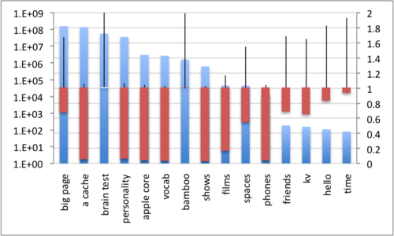
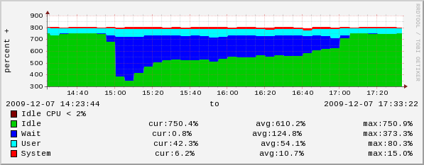
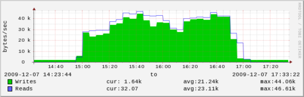
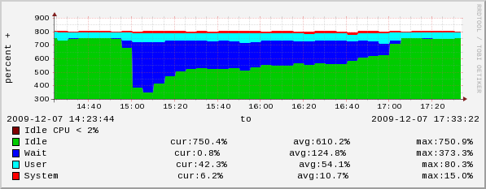
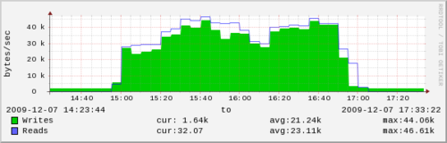

CouchDB needs to have it’s databases compacted regularly. It’s quite easy to do but the ease of doing so may lead you into thinking that it’s not worthy of serious consideration. You need to be aware of a few things.
Here at the beeb we have many databases of very differing sizes, with very different “busy times” and to be honest we don’t really know nor care what data is in them. Some documents are very simple, some we know are serialised PHP objects, some are JSON base64 encodings of images (we do not allow attachments) - some docs are less than 50 bytes, some are pushing 1 meg. Some databases have their busy times at 2am - others with the broadcast on the weekends of television shows.
We had a bug in some code a while ago (not CouchDB code) that meant we wanted to not compact our databases for a while. Ordinarily we compact daily - but for one namespace (renamed as “brain test” below) we wanted to keep all previous versions of data for a while (and still do so I did not compact it yesterday). As it was a “hmm - we need to do a one-off here” I compacted everything (nearly together) instead of our system code’s more gentle “one at a time” approach.
Here are some charts so see what happened.
This chart is going to take some explaining: 
Think of it like a stock chart: the blue is the “volume” - the overall size on disk of the database. Its axis is on the left drawn on a log scale given the range of sizes. The biggest was ~ 150 GB, the smallest 80k - but it’s not really that important here.
The top of the red bar is the relative size of the database before the compaction started - that’s why they are all “one” on the right-hand axis. The bottom of the red bar is the relative size of the database after the compaction finished. Some of the databases did not compact much, some compacted down to about 2% of their original size.
The thin black lines going up are the amount of space that the compaction took during the process. For namespaces that compact really well, that line is short and the “high tide mark” of the amount of space used is not much above the opening size. However - for namespaces that do not compact well - this high tide mark is as big as the original database. More on this watch-point later.
So - what can we see here?
- The biggest - “big page” - saved 32% of its space - it ended up at about 100 GB in the end.
- “a cache” which was the second biggest compacted REALLY well - due essentially to the very high number of revisions that some of its keys had. It started at 129 gig - finished at 7 gig. That was really quite a nice saving.
- I didn’t compact “brain test” so it finished up the same size - but look at it’s “high” bar. If I had compacted it - it would have take up quite a bit of space. The high bar ought not be there as it didn’t undergo the taking-up-more-space-temporarily compaction process - it’s a flaw in my spreadsheet.
As you look at the red bars, you can see that most databases compact well - but small ones look like they don’t. This is because small ones are not being revised much - there’s very little going on in them so there’s little changing and hence little for the compactor to free up.
So that’s the good news. Now the bad.
Here’s what the process did to one of our 16 servers handling the CouchDB data:
 



For two hours on these 8 core (2 x quad-core DL-380s) machines were taking a thumping. The ops crew came wandering over wondering what’s going on. They know that big HTTP traffic can cause load on these boxes but high load without traffic? That’s odd.
I don’t have the charts that show the slower response times that this causes on the users of the service but they’ll look a bit like the load graph.
What can we take from this?
- Compact regularly - but only if the amount of free space on your drives is greater than the size of your biggest database. This is a hard limit that your “capacity planning” must take into account
- It can save you a lot of space
- It will heavily load your servers - perhaps for quite a while
- Tell your ops crew that this will happen and that they can expect this sort of load